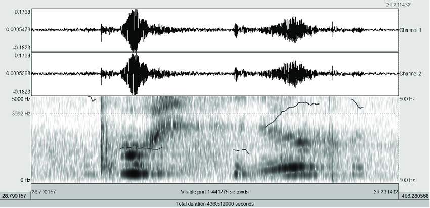

Projetos em Desenvolvimento

Produção do TCC: análise acústica da raiva e tristeza no corpus hoosier vocal emotion collection em relação a padrões acústicos descritos na literatura.

Construção de um formulário de seleção de áudios no corpus a partir da PCIbex Farm.